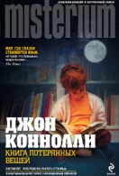

Название:Бегущая за луной
Автор: Сара Эдисон Аллен
Описание: Сара Эдисон Аллен. Бегущая за луной Памяти знаменитого доброго великана Роберта Першинга Уодлоу (1918–1940). Когда он умер в возрасте 22 лет, его рост составлял 272 см — абсолютный мировой рекорд, который никто не побил до сих пор. Глава 1 Она даже не сразу сообразила, что машина остановилась. Эмили оторвала взгляд от браслета с подвесками, который нервно вертела вокруг запястья, и посмотрела в окно. Два огромных дуба в палисаднике напоминали двух взволнованных дам, присевших в

Название:Книга потерянных вещей
Автор:Джон Коннолли
Описание: Джон Коннолли. Книга потерянных вещей Эта книга посвящается взрослой Дженнифер Ридьярд, а также Камерону Ридьярду и Алистеру Ридьярду, которые слишком скоро тоже станут взрослыми. Ведь в каждом взрослом живет ребенок, а каждый ребенок — будущий взрослый. В сказках, которые мне рассказывали в детстве, живет более глубокий смысл, чем в правде, которую преподает жизнь. Фридрих Шиллер (1759–1805) Все, что ты способен вообразить, — реально. Пабло Пикассо (1881–1973) I ОБО ВСЕМ